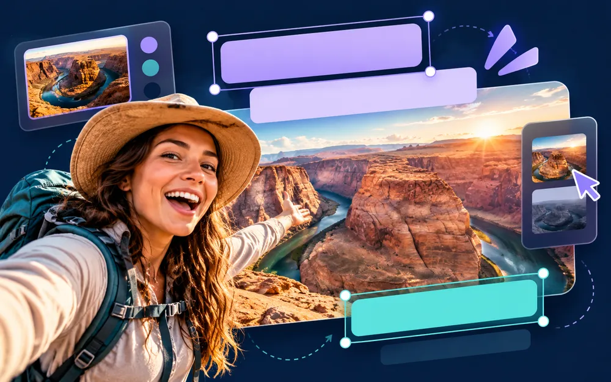
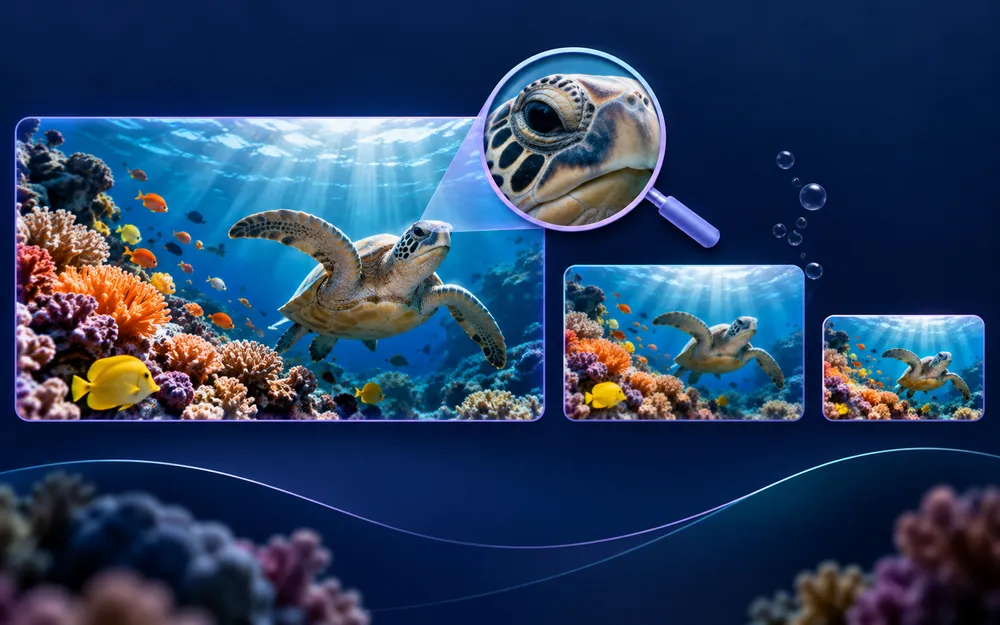
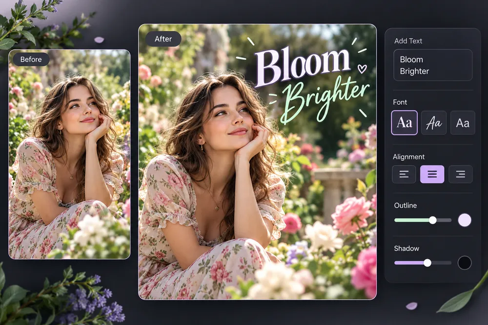
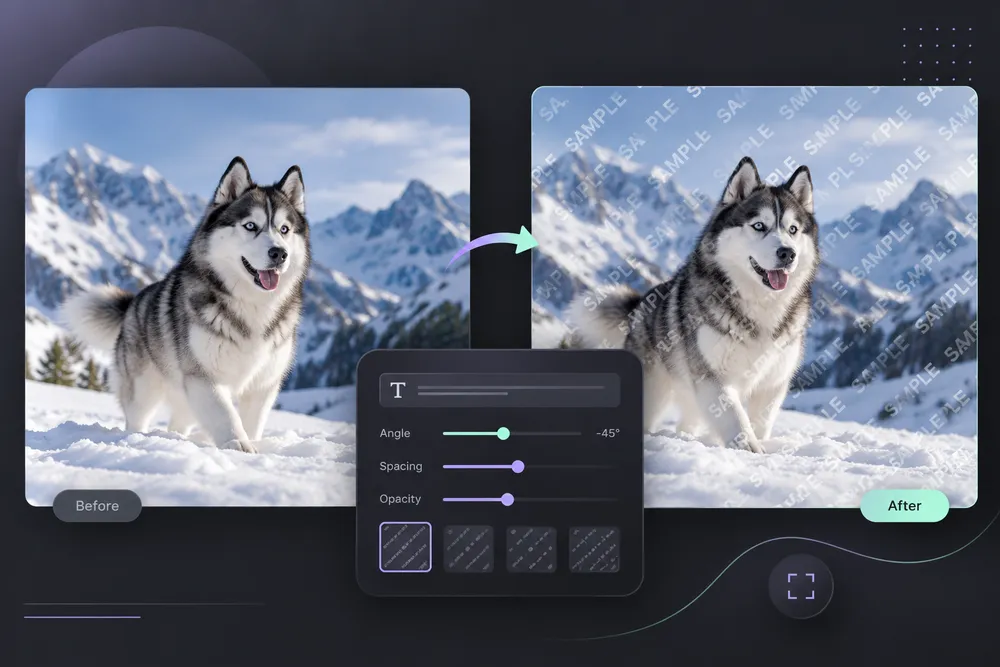
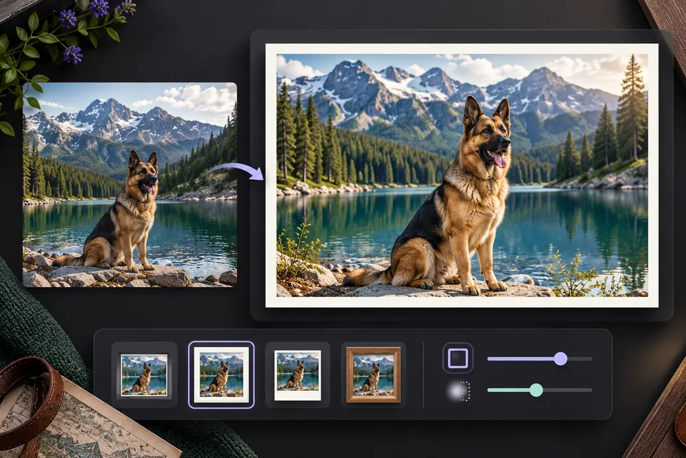

Watermarking & Branding
Explore watermarking & branding with dedicated controls, original visual guides and clear processing information.
7 tools

Thumbnail Maker
Make the promise of your video clear in one small image.
Browser workspace · Open tool ↗
Thumbnail Viewer
Find the available preview image without searching through a video.
Browser workspace · Open tool ↗Image & Video Watermark
Add a visible ownership mark with repeating text or your own logo, then keep a separate image or video copy.
Browser workspace · Open tool ↗
Add Text to Image
Add a caption with fonts, alignment, outline and shadow controls.
Browser workspace · Open tool ↗
Watermark Pattern Generator
Create a repeating diagonal text watermark across a photo.
Browser workspace · Open tool ↗WhatsApp DP Maker
Fit your complete photo into a square with solid or blurred borders.
Browser workspace · Open tool ↗
Photo Border & Frame Maker
Finish a photo with a solid frame, shadow or polaroid border.
Browser workspace · Open tool ↗